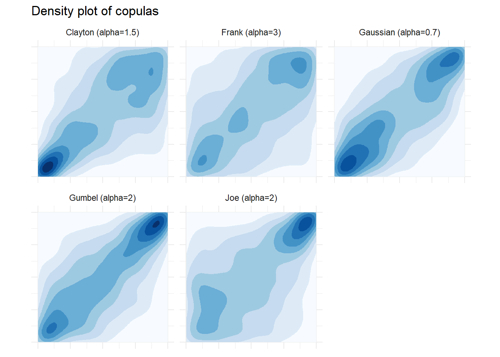
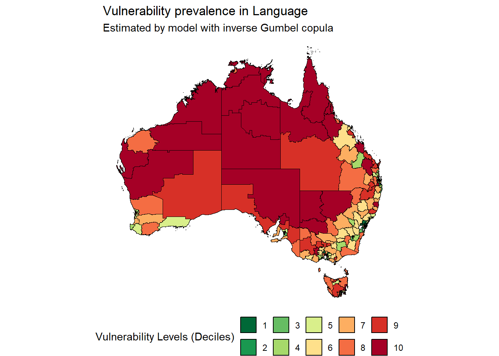

Code
devtools::install_github("MoooooLee/CARBayesCopula")Vignette of CARBayesCopula version 0.2.1
This is a vignette of the R package CARBayesCopula version 0.2.1. The package is designed to fit a bivariate Bayesian hierarchical model with copula, which is developed by Mu Li and available on GitHub. The package implements bivariate spatial generalized linear mixed models for area unit data, with inference in a Bayesian setting using Markov chain Monte Carlo (MCMC) simulation, which is built on the Rcpp package and CARBayes package (Eddelbuettel and François 2011; Lee 2013). As this is the first published version, the response variables can only be binomial. The structured random effects that capturing the spatial dependence is modeled by a conditional autoregressive (CAR) prior. The copula is used to model the dependence between the two response variables. The package is designed to be user-friendly and computationally efficient. The package is still under development and more features will be added in the future.
The study region \(\mathcal{S}\) is divided into \(K\) non-overlapping areal units \(\mathcal{S}_1, \mathcal{S}_2, \ldots, \mathcal{S}_n\). The response variables are \(\mathbf{y}_{A} = (y_{A,1}, \ldots, y_{A,K})\) and \(\mathbf{y}_{B} = (y_{B,1}, \ldots, y_{B,K})\), and a matrix of covariates \(\mathbf{X} = (\mathbf{x_1},\ldots,\mathbf{x_K})\) is available for each areal unit. We can also denote the known offsets by \(\mathbf{o} = (o_1,\ldots,o_K)\). We consider the trial numbers \(\mathbf{N}_A = (N_{A,1},\ldots,N_{A,K})\) and \(\mathbf{N}_B = (N_{B,1},\ldots,N_{B,K})\), which are known for each areal unit.
Here we noticed that missing, NA values are allowed in the response variables \((\mathbf{Y}_A, \mathbf{Y}_B)\). However, the missing values in covariates, offsets or trial numbers are not allowed. Trials numbers should be positive integers.
The response variables are binomial distributed, i.e., \[ \begin{align} y_{A,k} &\sim \text{Binomial}(N_k, p_{A,k}) \\ y_{B,k} &\sim \text{Binomial}(N_k, p_{B,k}) \end{align} \]
The logit of the probability of success \(\pi_{A,k}\) and \(\pi_{B,k}\) are modeled as \[ \begin{align} logit(p_{A,k}) &= \mathbf{x}_k^T\boldsymbol{\beta}_A + \phi_{A,k} \\ logit(p_{B,k}) &= \mathbf{x}_k^T\boldsymbol{\beta}_B + \phi_{B,k} \end{align} \]
where \(\boldsymbol{\beta}_A\) and \(\boldsymbol{\beta}_B\) are the fixed effects, and \(\phi_{A,k}\) and \(\phi_{B,k}\) are the structured random effects. The structured random effects are modeled by a conditional autoregressive (CAR) prior proposed by Leroux (Leroux, Lei, and Breslow 2000), which is defined by a neighborhood matrix \(\mathbf{W}\), the spatial dependence parameter \(\rho\), and a pair of precision parameters \(\tau_A\) and \(\tau_B\). The CAR prior is defined as \[ \begin{align} \phi_{A,k} | \mathbf{\phi}_{A,-k}, \rho, \mathbf{W}, \tau_A &\sim \text{N}\left( \frac{\rho \sum_{i=1}^K w_{kj}\phi_{A,i}}{\rho \sum_{i=1}^K w_{ki} +1 - \rho}, \frac{\tau_A^2}{\rho \sum_{i=1}^K w_{ki} +1 - \rho}\right) \\ \phi_{B,k} | \mathbf{\phi}_{B,-k}, \rho, \mathbf{W}, \tau_B &\sim \text{N}\left(\frac{\rho \sum_{i=1}^K w_{kj}\phi_{B,i}}{\rho \sum_{i=1}^K w_{ki} +1-\rho}, \frac{\tau_B^2}{\rho\sum_{i=1}^K w_{ki}+1-\rho}\right) \end{align} \] The parameter \(\rho\) is the spatial dependence parameter, which controls the strength of the spatial dependence, which can be either predetermined or estimated within the model. An increase in \(\rho\) denotes a proportional augmentation in the influence of spatial effects relative to the unstructured component of random effects. The precision parameters \(\tau_A\) and \(\tau_B\) are the precision parameters of the structured random effects \(\phi_{A,k}\) and \(\phi_{B,k}\), respectively. The neighborhood matrix \(\mathbf{W}\) can be a binary matrix that defines the neighborhood structure of the areal units. The diagonal elements of \(\mathbf{W}\) are zeros, and the off-diagonal elements are ones if the corresponding areal units are neighbors, and zeros otherwise.
After we formulate the marginal distribution of \(\phi_{A,k}\) and \(\phi_{B,k}\), we can define the joint distribution of \((\phi_{A,k}, \phi_{B,k})\) as a bivariate distribution. The dependence between the two response variables is modeled by a copula. The copula is a bivariate distribution function with uniform marginals (Nelsen 2006). Here we only consider copulas that can be determined by one parameter \(\alpha\), which can be written as \[ \begin{align} (\phi_{A,k}, \phi_{B,k}) | \alpha &\sim \text{Cop}_{C(\alpha)}(\phi_{A,k}, \phi_{B,k}) \end{align} \] where \(\text{Cop}_{C(\alpha)}\) is the choice of copula function \(C(.)\) with parameter \(\alpha\), which controls the strength and the type of the dependence. However, based on the choice of the copula, the parameter \(\alpha\) can have different interpretations (Genest and Rivest 1993). The copula parameter \(\alpha\) can be either predetermined or estimated within the model.
Copulas help us to decompose the joint distribution of two random variables into the marginal distributions and the copula function, which can be defined by Skalar’s theorem clearly (Sklar 1973). \[ \begin{align} F_{A,B}(x,y) &= C_{\alpha}(F_A(x), F_B(y))\\ &= C_{\alpha}(u, v)\\ \end{align} \] where \(F_{A,B}(x,y)\) is the cumulative probability function of the joint distribution of random variables \(A\) and \(B\), \(F_A(x)\) and \(F_B(y)\) are cumulative probability function of the marginal distributions each of them, and \(C_{\alpha}\) is the copula function with parameter \(\alpha\), where the input of the copula function is the cumulative probability \(u\) and \(v\) of the marginal distributions.
The choice of copula function is crucial in the modeling of the dependence between the two random variables. One of the important characteristics of the copula function is the tail dependence, which is the probability that both random variables are in the lower tail \(\lambda_L\) and the upper tail \(\lambda_U\) of their marginal distributions.
There are many copula functions available in the literature, and each of them has its own characteristics. Here we only consider some of the copula functions that are famous and widely used in the literature (Genest and Rivest 1993). The copula functions that are available in the package are as follows (Nelsen 2006):
| Copula | Bivariate Copula Function | \(\lambda_L\) | \(\lambda_U\) |
|---|---|---|---|
| Clayton | \((u^{-\alpha} + v^{-\alpha} - 1)^{-1/\alpha}\) | \(2^{-1/\alpha}\) | 0 |
| Frank | \(-\alpha^{-1} \log(\frac{1-e^{-\alpha} - (1-e^{-\alpha u }) (1-e^{-\alpha v})}{1-e^{-\alpha}})\) | 0 | 0 |
| Gumbel | \(\exp\{(-((-\log u)^\alpha + (-\log v)^\alpha)^{1/\alpha})\}\) | 0 | \(2-2^{1/\alpha}\) |
| Joe | \(1 - (1-u)^{\alpha} (1-v)^{\alpha}\) | \(1 - 2^{-1/\alpha}\) | 0 |
| Gaussian | \(\Phi_{\alpha}(\Phi^{-1}(u), \Phi^{-1}(v))\) | 0 | 0 |
The Clayton copula is used to model the lower tail dependence, the Frank copula is used to model the symmetric dependence, the Gumbel copula is used to model the upper tail dependence, the Joe copula is used to model the asymmetric dependence, and the Gaussian copula is used to model the linear correlation between the two random variables, where \(\alpha\) in Gaussian copula is the correlation coefficient.
The inverse copulas, which are the mirror image of the original copulas, are also available in the package, which can be used to model the opposite tail dependence.
We would like to show the implementation of the model in the package by a example. The example is based on the dataset SA3_dataset and the neighborhood matrix SA3_W that are available in the package. The dataset SA3_dataset contains the response variables Health and Social, Emotional, Language, Communication which are five difference domains of measure of children development that collceted by the Australian Early Development Census (AEDC) (AEDC 2024). The covariates contains four difference Social-Economic Index of Area (SEIFA) in Australia for each areal unit (Australian Bureau of Statistics 2021). The neighborhood matrix SA3_W is a binary matrix that defines the neighborhood structure of the areal units, which is based on the spatial coordinates of the Australia Statistical Geography Standard (ASGS) 2021 SA3 regions (ABS 2021). The dataset also contains the spatial coordinates of the areal units, which can be used to visualize the spatial distribution of the variables on maps.
In this example, we will fit a bivariate Bayesian hierarchical model with copula for the response variables Social and Language, where the response variables are binomial distributed. The model will be fitted with the neighborhood matrix SA3_W and the covariates IRSD.
The package can be installed from GitHub by the following code:
devtools::install_github("MoooooLee/CARBayesCopula")As the package is still under development, the package is not available on CRAN.
For this example, we also need to library packages tidyverse for data analysis and visualization. We also need to library the package spdep for spatial dependence analysis, and the package flextable for table formatting, and the package ggpubr for advanced visualization.
library(CARBayesCopula)
library(tidyverse)
library(spdep)
library(copula)
library(flextable)
library(ggpubr)We first would like to show the empirical copulas of the residuals between the response variables Social and Language after fitting the simple generalized linear model (GLM) with the covariate IRSD for each of the response variables. The empirical copulas, which can be visualized by a scatter plot of the pseudo-observations of the residuals, can help us to understand the dependence between the two response variables after we remove the effects of the marginal distributions.
# Load the dataset
data("aedc_sa3")
SA3_dataset_GLM <- aedc_sa3 %>%
st_drop_geometry() %>%
select(SA3_NAME21, IRSD,
Social_Vulnerable_21, Language_Vulnerable_21,
Social_N_21, Language_N_21) %>%
rename(social_vulnerable = Social_Vulnerable_21,
language_vulnerable = Language_Vulnerable_21,
social_trial = Social_N_21,
language_trial = Language_N_21) %>%
drop_na(social_vulnerable, language_vulnerable)
head(SA3_dataset_GLM) %>%
flextable()SA3_NAME21 | IRSD | social_vulnerable | language_vulnerable | social_trial | language_trial |
|---|---|---|---|---|---|
Queanbeyan | 1,061.1772 | 70 | 51 | 790 | 790 |
Snowy Mountains | 1,017.0323 | 21 | 18 | 212 | 212 |
South Coast | 985.3111 | 60 | 68 | 649 | 638 |
Goulburn - Mulwaree | 978.8543 | 32 | 30 | 410 | 410 |
Young - Yass | 1,008.7233 | 31 | 35 | 397 | 397 |
Gosford | 1,019.8630 | 160 | 102 | 1,966 | 1,966 |
After we fit the GLM for the response variables Social and Language, we can calculate the residuals and the pseudo-observations of the residuals. The pseudo-observations of the residuals can be the results
. The empirical copulas can be visualized by a scatter plot of the pseudo-observations of the residuals.
res <- tibble(
res_social = (cbind(social_vulnerable, social_trial - social_vulnerable) ~ IRSD) %>%
glm(family = binomial, data = SA3_dataset_GLM) %>%
residuals(type = "pearson"),
res_language = (cbind(language_vulnerable, language_trial - language_vulnerable) ~ IRSD) %>%
glm(family = binomial, data = SA3_dataset_GLM) %>%
residuals(type = "pearson")
)
pobsres <- tibble(
pobsres_social = pobs(res$res_social),
pobsres_language = pobs(res$res_language)
)
res_pobsres <- bind_cols(res, pobsres)
res_pobsres_samples <- res_pobsres %>% slice_head(n = 5)
plot1 <- res_pobsres %>%
ggplot(aes(x = res_social, y = res_language)) +
geom_density_2d_filled(alpha = 1, bins = 9) +
geom_point(size = 0.6) +
geom_segment(data = res_pobsres_samples,
aes(x = res_social, xend = 10,
y = res_language, yend = res_language),
linewidth = 0.5, color = "red") +
geom_segment(data = res_pobsres_samples,
aes(x = res_social, xend = res_social,
y = -10, yend = res_language),
linewidth = 0.5, color = "red") +
geom_point(data = res_pobsres_samples,
size = 1.5, shape = 15,
color = "red") +
geom_rug(sides = "br") +
coord_cartesian(xlim = c(-5, 5), ylim = c(-5, 5)) +
scale_fill_brewer(palette = "Blues") +
labs(x = " ", y = "Residuals in Language") +
theme_minimal() +
theme(legend.position = "none")
plot2 <- res_pobsres %>%
ggplot(aes(x = pobsres_language, y = res_language)) +
geom_segment(data = res_pobsres_samples,
aes(x = -1, xend = pobsres_language,
y = res_language, yend = res_language),
linewidth = 0.5, color = "red") +
geom_segment(data = res_pobsres_samples,
aes(x = pobsres_language, xend = pobsres_language,
y = -10, yend = res_language),
linewidth = 0.5, color = "red") +
geom_point(size = 0.6) +
geom_point(data = res_pobsres_samples,
size = 1.5, shape = 15,
color = "red") +
coord_cartesian(xlim = c(0, 1), ylim = c(-5, 5)) +
labs(x = " ", y = " ") +
theme_minimal() +
theme(legend.position = "none")
plot3 <- res_pobsres %>%
ggplot(aes(x = res_social, y = pobsres_social)) +
geom_segment(data = res_pobsres_samples,
aes(x = res_social, xend = 10,
y = pobsres_social, yend = pobsres_social),
linewidth = 0.5, color = "red") +
geom_segment(data = res_pobsres_samples,
aes(x = res_social, xend = res_social,
y = pobsres_social, yend = 10),
linewidth = 0.5, color = "red") +
geom_point(size = 0.6) +
geom_point(data = res_pobsres_samples,
size = 1.5, shape = 15,
color = "red") +
coord_cartesian(xlim = c(-5, 5), ylim = c(0, 1)) +
labs(x = "Residuals in Social", y = "Probability integral transformed\nresiduals in Social ") +
theme_minimal() +
theme(legend.position = "none")
plot4 <- res_pobsres %>%
ggplot(aes(x = pobsres_language, y = pobsres_social)) +
geom_density_2d_filled(alpha = 1, bins = 9) +
geom_point(size = 0.6) +
geom_segment(data = res_pobsres_samples,
aes(x = -10, xend = pobsres_language,
y = pobsres_social, yend = pobsres_social),
linewidth = 0.5, color = "red") +
geom_segment(data = res_pobsres_samples,
aes(x = pobsres_language, xend = pobsres_language,
y = pobsres_social, yend = 10),
linewidth = 0.5, color = "red") +
geom_point(data = res_pobsres_samples,
size = 1.5, shape = 15,
color = "red") +
geom_rug(sides = "tl") +
coord_cartesian(xlim = c(0, 1), ylim = c(0, 1)) +
scale_fill_brewer(palette = "Blues") +
labs(x = "Probability integral transformd\nresiduals in Language", y = " ") +
theme_minimal() +
theme(legend.position = "none")
ggarrange(plot1, plot2, plot3, plot4,
ncol = 2, nrow = 2) %>%
annotate_figure(
top = text_grob("Residuals and Probability Integral Transforms",
face = "bold", size = 14),
bottom = text_grob("between Social and Langauage Vulnerable",
face = "bold", size = 12)
)We may notice that the empirical copulas of the residuals between the response variables Social and Language are not symmetric and not linear, which indicates that the copula function is needed to model the complex dependence between the two response variables.
Then we show some theoretical copulas that are available in the package. The copulas are Gaussian, Frank, Clayton, Gumbel, and Joe copulas. The copulas are visualized by the density plot of the bivariate distribution of the copula.
n <- 2000
normalCopula(0.7, dim = 2) %>%
rCopula(n,.) %>%
as_tibble() %>%
mutate(Copula = "Gaussian (alpha=0.7)") %>%
bind_rows(
frankCopula(3, dim = 2) %>%
rCopula(n,.) %>%
as_tibble() %>%
mutate(Copula = "Frank (alpha=3)"),
claytonCopula(1.5, dim = 2) %>%
rCopula(n,.) %>%
as_tibble() %>%
mutate(Copula = "Clayton (alpha=1.5)"),
gumbelCopula(2, dim = 2) %>%
rCopula(n,.) %>%
as_tibble() %>%
mutate(Copula = "Gumbel (alpha=2)"),
joeCopula(2, dim = 2) %>%
rCopula(n,.) %>%
as_tibble() %>%
mutate(Copula = "Joe (alpha=2)")
) %>%
ggplot() +
geom_density_2d_filled(aes(x = V1,
y = V2),
bins = 9) +
coord_fixed(ratio = 1) +
scale_fill_brewer(palette = "Blues") +
facet_wrap(~Copula) +
labs(title = "Density plot of copulas") +
theme_minimal() +
theme(
axis.text.x = element_blank(), # Hide x-axis labels
axis.title.x = element_blank(),
axis.ticks.x = element_blank(), # Hide x-axis ticks
axis.text.y = element_blank(), # Hide y-axis labels
axis.ticks.y = element_blank(),
axis.title.y = element_blank(),
legend.position = "none"
)
Based on the density plot of the copulas, we can see that the Gaussian copula is symmetric, while the Gumbel, Joe and Clayton copulas are asymmetric, which may be more suitable to model the dependence between the two response variables.
In this section we would like to show the implementation of the bivariate Bayesian hierarchical model with copula. As we noticed, the residuals between the response variables Social and Language are not symmetric and not linear, we would like to try Clayton and inverse of Gumbel copulas to model the dependence between the two response variables. We need to load the neighborhood matrix aedc_W_sa3 that is available in the package.
options(width = 120) # Set the output width to a larger value
data("aedc_W_sa3") # Load the neighborhood matrix
input_formula <- cbind(Social_Vulnerable_21, Language_Vulnerable_21) ~ IRSD
input_trials <- cbind(aedc_sa3$Social_N_21, aedc_sa3$Language_N_21)
set.seed(1234) # Set the seed for reproducibility
model_fit_clayton <- fit_CARleroux_copula(formula = input_formula,
trials = input_trials,
W = aedc_W_sa3,
data = aedc_sa3,
copula = "clayton",
burnin = 20000,
n_sample = 30000,
thin = 5,
verbose = FALSE)
model_fit_invgumbel <- fit_CARleroux_copula(formula = input_formula,
trials = input_trials,
W = aedc_W_sa3,
data = aedc_sa3,
copula = "inversegumbel",
burnin = 20000,
n_sample = 30000,
thin = 5,
verbose = FALSE)It may take a while to fit the model, as the model is fitted with MCMC simulation. After the model is fitted, we can summarize the model by the summary function. The summary of the model includes the posterior means, standard deviations, and the 95% credible intervals of the parameters, the DIC value, and the effective sample size of the parameters. The Deviance Information Criterion (DIC) and Leave-One-Out information criterion (LOOIC) are provided to compare the goodness of fit of the models (Vehtari et al. 2020). We prefer the model with a smaller DIC and LOOIC value.
summary(model_fit_clayton)
#################
#### Model fitted
#################
Likelihood model - Binomial (logit link function)
Random effects model - Clayton Leroux MCAR
Regression equation - cbind(Social_Vulnerable_21, Language_Vulnerable_21) ~ IRSD
Number of missing observations - 10
############
#### Results
############
Posterior quantities and DIC
Median 2.5% 97.5% n_effective geweke.diag
Social_Vulnerable_21 - (Intercept) 2.4423 1.9027 3.0037 86.7 3.4
Social_Vulnerable_21 - IRSD -0.0047 -0.0053 -0.0042 86.5 -3.5
Language_Vulnerable_21 - (Intercept) 4.6810 4.0833 5.3284 54.5 4.0
Language_Vulnerable_21 - IRSD -0.0073 -0.0080 -0.0067 54.5 -4.0
tau2-1 0.1295 0.0958 0.1779 116.7 0.2
tau2-2 0.1638 0.1239 0.2211 110.4 0.2
rho 0.6207 0.4536 0.8329 187.5 -1.8
alpha 1.8650 1.2255 2.6803 175.5 0.5
DIC = 4848.398 p.d = 404.5616 LMPL = -2527.22 LOOIC = 4979.63 summary(model_fit_invgumbel)
#################
#### Model fitted
#################
Likelihood model - Binomial (logit link function)
Random effects model - Inverse Gumbel Copula Leroux MCAR
Regression equation - cbind(Social_Vulnerable_21, Language_Vulnerable_21) ~ IRSD
Number of missing observations - 10
############
#### Results
############
Posterior quantities and DIC
Median 2.5% 97.5% n_effective geweke.diag
Social_Vulnerable_21 - (Intercept) 2.3137 1.8851 2.8402 98.3 1.1
Social_Vulnerable_21 - IRSD -0.0046 -0.0051 -0.0041 99.2 -1.1
Language_Vulnerable_21 - (Intercept) 4.6070 4.1198 5.2352 77.3 2.1
Language_Vulnerable_21 - IRSD -0.0072 -0.0079 -0.0067 77.6 -2.1
tau2-1 0.1340 0.0975 0.1806 120.7 -1.9
tau2-2 0.1645 0.1212 0.2264 119.2 -0.6
rho 0.6760 0.4943 0.9139 167.2 -2.0
alpha 2.2657 1.8632 2.9173 198.3 0.2
DIC = 4835.821 p.d = 386.9251 LMPL = -2513.57 LOOIC = 4961.71 CARBayes packageWe would like to compare the bivariate Bayesian hierarchical model with copula with the bivariate Gaussian model in the CARBayes package. Here we fit all the copulas that are available in the package, which are Gaussian, Clayton, Joe, Gumbel, Frank, and their inverse copulas and the bivariate Gaussian model. We would like to compare the DIC and LOOIC values of the models to see which model is better to fit the data.
As it may take a long time to fit all the models, we only show the results here, and model fitting are saved in the RDS files.
copula | DIC | p.d | WAIC | p.w | LMPL | loglikelihood | LOOIC | elpd |
|---|---|---|---|---|---|---|---|---|
clayton | 4,845.05 | 404.68 | 4,803.15 | 272.14 | -2,517.37 | -2,017.85 | 4,962.21 | -2,481.10 |
frank | 4,843.79 | 392.14 | 4,819.85 | 277.22 | -2,509.27 | -2,029.75 | 4,962.64 | -2,481.32 |
gaussian | 4,834.44 | 373.30 | 4,821.18 | 272.31 | -2,501.35 | -2,043.92 | 4,957.04 | -2,478.52 |
gumbel | 4,852.36 | 392.43 | 4,829.78 | 278.87 | -2,512.80 | -2,033.75 | 4,973.34 | -2,486.67 |
inverseclayton | 4,872.24 | 413.37 | 4,841.88 | 287.05 | -2,542.93 | -2,022.75 | 5,008.71 | -2,504.36 |
inversegumbel | 4,834.95 | 385.54 | 4,806.99 | 269.85 | -2,492.10 | -2,031.93 | 4,943.95 | -2,471.97 |
inversejoe | 4,848.33 | 405.55 | 4,808.59 | 274.12 | -2,533.75 | -2,018.62 | 4,978.57 | -2,489.29 |
joe | 4,871.01 | 413.50 | 4,836.29 | 284.25 | -2,527.92 | -2,022.00 | 4,994.35 | -2,497.18 |
MVS | 4,828.12 | 374.78 | 4,806.38 | 267.09 | -2,500.66 | -2,039.27 | 4,944.72 | -2,472.36 |
Social - Language | ||||||||
We noticed that the bivariate Bayesian hierarchical model with copula with the Clayton copula has the smallest WAIC value and the inverse of Gumbel copula has the smallest LOOIC value. Those two models both better fit the data than the bivariate Gaussian model (denote as MVS).
We can visualize the fitted results as the model-based estimation on maps to see the spatial distribution of the response variables and the structured random effects comparing to the direct estimation. The model-based estimation is the estimation of the vulnerability prevalence in the Social and Language domains, which is estimated by the inverse Gumbel copula (based on the criteria of LOOIC value). The direct estimation is estimated by the direct proportion of the vulnerable children to the total children in the areal units.
est_model <- model_fit_invgumbel$fitted_values
colnames(est_model) <- c("social_est_model", "language_est_model")
aedc_sa3_results <- aedc_sa3 %>%
select(SA3_NAME21, SA4_NAME21, GCC_NAME21, STE_NAME21,
IRSD,
Social_Vulnerable_21, Language_Vulnerable_21,
Social_N_21, Language_N_21) %>%
bind_cols(est_model) %>%
mutate(social_est_dir = Social_Vulnerable_21 / Social_N_21,
language_est_dir = Language_Vulnerable_21 / Language_N_21,
social_est_model = social_est_model / Social_N_21,
language_est_model = language_est_model / Language_N_21) %>%
pivot_longer(cols = contains(c("est_dir","est_model")),
names_to = "domain_method",
values_to = "est") %>%
group_by(domain_method) %>%
mutate(est_cat = factor(ntile(est, 10)))We first visualize the vulnerability prevalence in the Social and Language domains estimated by the direct proportion on maps.
aedc_sa3_results %>%
filter(domain_method == "social_est_dir") %>%
ggplot() +
geom_sf(aes(fill = est_cat),
color = "black") +
scale_fill_brewer(palette = "RdYlGn",
direction = -1,
na.value = "grey") +
labs(title = "Vulnerability prevalence in Social",
subtitle = "Estimated by direct proportion",
fill = "Vulnerability Levels (Deciles)") +
theme_void() +
theme(legend.position = "bottom")aedc_sa3_results %>%
filter(domain_method == "language_est_dir") %>%
ggplot() +
geom_sf(aes(fill = est_cat),
color = "black") +
scale_fill_brewer(palette = "RdYlGn",
direction = -1,
na.value = "grey") +
labs(title = "Vulnerability prevalence in Language",
subtitle = "Estimated by direct proportion",
fill = "Vulnerability Levels (Deciles)") +
theme_void() +
theme(legend.position = "bottom")Then, we visualize the vulnerability prevalence in the Social and Language domains estimated by the inverse Gumbel copula on maps.
aedc_sa3_results %>%
filter(domain_method == "social_est_model") %>%
ggplot() +
geom_sf(aes(fill = est_cat),
color = "black") +
scale_fill_brewer(palette = "RdYlGn",
direction = -1,
na.value = "grey") +
labs(title = "Vulnerability prevalence in Social",
subtitle = "Estimated by model with inverse Gumbel copula",
fill = "Vulnerability Levels (Deciles)") +
theme_void() +
theme(legend.position = "bottom")aedc_sa3_results %>%
filter(domain_method == "language_est_model") %>%
ggplot() +
geom_sf(aes(fill = est_cat),
color = "black") +
scale_fill_brewer(palette = "RdYlGn",
direction = -1,
na.value = "grey") +
labs(title = "Vulnerability prevalence in Language",
subtitle = "Estimated by model with inverse Gumbel copula",
fill = "Vulnerability Levels (Deciles)") +
theme_void() +
theme(legend.position = "bottom")